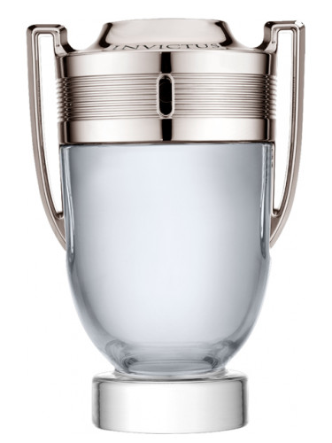

Fragrance Realm

Invictus Paco Rabanne
Price: 80 EUR
Description: Invictus by Paco Rabanne is a Woody Aquatic fragrance for men. Invictus was launched in 2013. Invictus was created by Veronique Nyberg, Anne Flipo, Olivier Polge and Dominique Ropion. Top notes are Sea Notes, Grapefruit and Mandarin Orange; middle notes are Bay Leaf and Jasmine; base notes are Ambergris, Guaiac Wood, Oakmoss and Patchouli.
Main accords:
- citrus
- marine
- aromatic
Top Notes: Mandarine Orange , Sea Notes
Middle Notes: Jasmine
Base Notes: Patchouli